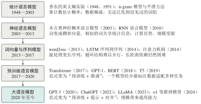

2.2 语言模型的演进：从数词频到大模型
“给定前文，预测下一个词”这个问题已经被研究了七十多年。它在数学上是什么对象？怎样衡量一个模型预测得好不好？为什么最后是“大”模型胜出？本节先给出语言模型的定义和困惑度指标，再沿时间线看每一代模型解决了上一代的什么缺陷：n-gram 靠计数，受困于数据稀疏；神经语言模型用词向量带来泛化；循环网络和注意力处理任意长的序列；Transformer 让并行训练成为可能，预训练和规模化随之而来。最后从思想史的角度说明，这条路线为什么被称为“经验主义的胜利”。
2.2.1 语言模型是什么
一个语言模型（language model）是定义在文本序列上的概率分布。设一段文本由词元 \(x_1,x_2,\dots,x_T\) 组成（词元，即 token，是模型处理文本的基本单位，切分方法见第 2.3.1 小节），由概率的链式法则，整段文本的概率可以分解为逐个词元的条件概率之积： \[P(x_1,x_2,\dots,x_T) = \prod_{t=1}^{T} P_\theta(x_t \mid x_{<t}), \tag{2-4}\] 其中 \(x_{<t}\) 表示第 \(t\) 个词元之前的全部词元，\(\theta\) 是模型参数。式 （2-4） 把“生成一段文本”化成了“反复预测下一个词元”：只要模型能对任意前文给出下一个词元的分布，就能一个接一个地生成。
训练语言模型，就是在大量文本上让模型给真实出现的下一个词元尽可能高的概率，即最小化平均交叉熵损失（等价于最大化似然）： \[\mathcal{L}(\theta) = -\frac{1}{T}\sum_{t=1}^{T}\log P_\theta(x_t \mid x_{<t}). \tag{2-5}\] 训练所用的“标签”就是文本自己的下一个词元，不需要人工标注，这种学习方式称为自监督学习。
评价语言模型最常用的指标是困惑度（perplexity，PPL），它是平均交叉熵损失的指数： \[\mathrm{PPL} = \exp\Bigl(-\frac{1}{T}\sum_{t=1}^{T}\log P_\theta(x_t\mid x_{<t})\Bigr) = \exp\bigl(\mathcal{L}\bigr). \tag{2-6}\] 困惑度可以这样理解：若模型在每个位置都给真实词元概率 \(1/k\)，则 \(\mathrm{PPL}=k\)，相当于模型每一步都在 \(k\) 个等可能的候选里随机挑一个。困惑度越低，模型对语言的把握越大。
2.2.2 统计语言模型：数出来的概率
1948 年，香农（Claude Shannon）在创立信息论的论文中，就用英文字母和单词的统计规律生成过文本[8]；1951 年，他又通过让人逐个猜测下一个字母的实验，估计了英文的信息熵。这可以看作最早的语言模型。
精确估计 \(P(x_t\mid x_{<t})\) 是做不到的：完全相同的长前文几乎不会在语料中重复出现，没法计数。n-gram 模型引入马尔可夫假设——一个词元只依赖它前面的 \(n-1\) 个词元，于是概率可以用语料中的出现次数来估计： \[P(x_t \mid x_{t-n+1},\dots,x_{t-1}) \approx \frac{\mathrm{count}(x_{t-n+1},\dots,x_{t-1},x_t)}{\mathrm{count}(x_{t-n+1},\dots,x_{t-1})}. \tag{2-7}\]
例 2-2 bigram 概率与困惑度
某语料中“天气”出现 1000 次，其后紧跟“很”的有 200 次；“很”出现 5000 次，其后紧跟“好”的有 1000 次。用 bigram（\(n=2\)）模型估计 \(P(\text{很}\mid\text{天气})\)、\(P(\text{好}\mid\text{很})\)，并求模型在“天气 很 好”后两个词元上的困惑度。
| 步骤 | 算什么 | 算式 | 结果 | 这个数从哪来 |
|---|---|---|---|---|
| 1 | \(P(\text{很}\mid\text{天气})\) | \(200\div1000\) | \(0.2\) | 式 （2-7），\(n=2\) |
| 2 | \(P(\text{好}\mid\text{很})\) | \(1000\div5000\) | \(0.2\) | 同上 |
| 3 | 平均交叉熵 | \(-\tfrac12\bigl(\ln0.2+\ln0.2\bigr)\) | \(1.609\) | 式 （2-5），\(T=2\) |
| 4 | 困惑度 | \(e^{1.609}\) | \(5\) | 式 （2-6） |
数据流向：计数 \(\to\) 条件概率 \(\to\) 取对数求平均 \(\to\) 取指数。两个位置的概率都是 \(1/5\)，困惑度恰好是 5：模型每一步相当于在 5 个等可能的词里挑一个。
n-gram 简单高效，曾长期是语音识别和输入法的核心组件，但有三个根本缺陷：
数据稀疏。词表大小为 \(\lvert\mathcal{V}\rvert\) 时，可能的 n-gram 有 \(\lvert\mathcal{V}\rvert ^{\,n}\) 种。\(\lvert\mathcal{V}\rvert =5\times10^4\)、\(n=3\) 时就有 \(1.25\times10^{14}\) 种组合，绝大多数从未在语料中出现，按式 （2-7） 估出的概率为 0。加一平滑、Kneser–Ney 平滑等技术只能缓解。
上下文太短。\(n\) 一般只取 3～5，模型看不到更远的信息。“我在北京长大……（一大段其他内容）……所以我说一口流利的”，要填出“普通话”需要远距离依赖。
无法泛化。对 n-gram 来说，“猫”和“狗”是两个毫无关系的符号。即使见过一万次“猫在沙发上睡觉”，它也推断不出“狗在沙发上睡觉”同样通顺。
2.2.3 神经语言模型：把词变成向量
2003 年，本吉奥（Yoshua Bengio）等人提出神经概率语言模型（NPLM）[9]，同时解决了第一和第三个缺陷。它给每个词分配一个可学习的稠密向量，称为词嵌入（word embedding）；把前 \(n-1\) 个词的向量拼接后送入神经网络，再用 softmax 输出下一个词的概率分布。训练过程中，出现在相似语境里的词会得到相近的向量，于是“猫”和“狗”在向量空间里靠得很近，从“猫在沙发上睡觉”学到的知识自然迁移到“狗”上。没见过的词组合也能得到合理的概率，数据稀疏问题由此根本缓解。
2013 年，Google 的米科洛夫（Tomas Mikolov）等人提出 word2vec[10]，把训练词向量的成本降到可以在数十亿词上运行，并展示了词向量的线性结构，例如 \(\vec{v}(\text{国王})-\vec{v}(\text{男人})+\vec{v}(\text{女人})\approx\vec{v}(\text{女王})\)。但 word2vec 的词向量是静态的：“苹果”在“吃一个苹果”和“苹果发布了新手机”里是同一个向量，无法区分一词多义。
2.2.4 循环网络与注意力：处理任意长的序列
为了突破固定长度的上下文，循环神经网络（RNN）用一个隐藏状态 \(\boldsymbol{h}_t\) 记住读过的内容，每读入一个词就更新一次： \[\boldsymbol{h}_t = \tanh\bigl(W\boldsymbol{h}_{t-1} + U\boldsymbol{x}_t + \boldsymbol{b}\bigr). \tag{2-8}\] 理论上 \(\boldsymbol{h}_t\) 包含了从开头到当前的全部信息。但反向传播时，梯度要沿时间步一路连乘 \(W\)，序列一长就会指数级地衰减或增大，这就是梯度消失与梯度爆炸。1997 年提出的长短期记忆网络（LSTM）[11]用门控机制控制信息的写入、遗忘和输出，大大缓解了这一问题。2014 年的序列到序列（seq2seq）模型用一个（多层）LSTM 编码器把源句压成一个向量，再用另一个 LSTM 解码器生成译文[12]，开启了神经机器翻译。
seq2seq 的瓶颈很明显：无论源句多长，都要压进一个固定长度的向量。同年，巴达瑙（Dzmitry Bahdanau）等人提出注意力机制[13]：解码器生成每个词时，都可以回头查看编码器在所有位置上的状态，并自己决定重点看哪里——翻译“apple”时，注意力自然落在源句的“苹果”上。
循环结构还有一个缺陷：第 \(t\) 步必须等第 \(t-1\) 步算完，无法在序列维度上并行。2017 年的 Transformer[14]把这一点推到底：既然注意力已经能在任意两个位置之间直接建立联系，就把它用到同一序列内部（自注意力），干脆去掉循环。所有位置可以同时计算，GPU 的并行能力得以充分发挥，这是此后模型能够做“大”的关键前提之一。Transformer 的内部计算是第 2.3 节的主题。
2.2.5 预训练与大模型：两次范式转移
2018 年是预训练元年。ELMo 用双向 LSTM 生成随上下文变化的词向量，解决了一词多义[15]；OpenAI 的 GPT-1[16]和 Google 的 BERT[17]则用 Transformer 在大规模无标注文本上预训练，再在具体任务的少量标注数据上微调，刷新了大多数自然语言处理基准。这是第一次范式转移：从“为每个任务设计一个模型”变为“预训练 + 微调”。
2020 年的 GPT-3[18]带来了第二次范式转移。模型参数达到 1750 亿后，只需在提示中写几个示例，它就能完成翻译、问答、算术等任务，不再需要微调。2022 年 11 月，OpenAI 在 GPT-3.5 上叠加指令微调和基于人类反馈的强化学习（第 2.6 节），发布了 ChatGPT。此后，Meta 的 LLaMA（2023）[19]推动了开源模型生态；OpenAI o1（2024）和 DeepSeek-R1（2025）[20]等推理模型又把重心从“训练得更大”扩展到“推理时想得更久”。图 2-3 把这条演进路线分为五个阶段；表 2-3 则从“人主要做什么”的角度把它归为四种范式：统计语言模型属于“统计学习”，神经语言模型与序列模型两个阶段同属“深度学习”，后两个阶段分别对应两次范式转移。

图 2-3 语言模型的五个发展阶段。箭头表示时间先后；右侧大字为代表工作，小字为该阶段的进展与留下的问题，下一阶段正是为解决这些问题而来
表 2-3 自然语言处理的范式变迁
| 范式 | 模型怎样完成任务 | 人的主要工作 |
|---|---|---|
| 统计学习 | 为每个任务训练一个浅层模型 | 特征工程：手工设计输入特征 |
| 深度学习 | 为每个任务训练一个神经网络 | 架构工程：设计网络结构 |
| 预训练 + 微调 | 一个预训练模型，按任务微调 | 目标工程：设计预训练任务与微调方式 |
| 预训练 + 提示 + 对齐 | 一个通用大模型，直接用自然语言下达任务 | 提示工程与对齐：告诉模型做什么、怎样才算做好 |
2.2.6 经验论的视角：从确定性到概率
回看这条路线，每一代模型都更少依赖人写的规则、更多依赖数据中的统计规律。为什么这条路走得通？思想史提供了一个参照。
亚里士多德把论证的工具分为逻辑、辩证法和修辞：逻辑追求用推理达到确定的知识，后两者处理的是“很可能为真”的意见与说服——这可以看作概率思想的先声。在人类思想史的大部分时间里，确定性的传统占上风：宗教中的因果论与决定论，科学中的牛顿力学，都相信世界由确定的规律支配，知道初始条件就能推出一切。在这个意义上，爱因斯坦可以说是“最后一位牛顿”。
苏格兰哲学家休谟（David Hume）的怀疑论动摇了这一传统。他认为一切观念都来自感官印象，人无法越过知觉去追问知觉背后的来源；所谓“因果”，不过是反复看到 A 之后出现 B 而形成的习惯性联想。太阳每天升起，并不能在逻辑上保证明天它还会升起。既然齿轮般的演绎推理无法从经验通向结论，就需要借助概率在证据与结论之间建立联系。沿着这条路，有三个人物与今天的大模型直接相关。
贝叶斯：用证据更新信念 贝叶斯公式给出了“看到证据之后应当如何修正判断”的定量规则： \[P(H\mid E) = \frac{P(E\mid H)\,P(H)}{P(E)}, \tag{2-9}\] 其中先验 \(P(H)\) 是看到证据前的信念，似然 \(P(E\mid H)\) 衡量假设对证据的解释力，后验 \(P(H\mid E)\) 是更新后的信念。现代决策论的核心可以概括为“概率论 + 效用理论”：先用概率刻画不确定性，再用效用衡量后果，选择期望效用最大的行动。
玻尔兹曼：把概率引入物理学 玻尔兹曼用统计方法处理大量分子的运动：单个分子的轨迹无法追踪，就把它们当作随机运动，只研究微观状态的概率分布。热量不会自发地从冷物体流向热物体，并不是有一条定律“禁止”它，而是对宏观物体来说这种状态出现的概率小到可以忽略——这里起作用的是统计概率。他给出的玻尔兹曼分布是 \[P(s) = \frac{e^{-E(s)/(kT_{\mathrm{K}})}}{\sum_{s'} e^{-E(s')/(kT_{\mathrm{K}})}}, \tag{2-10}\] 其中 \(E(s)\) 是状态 \(s\) 的能量，\(k\) 是玻尔兹曼常数，\(T_{\mathrm{K}}\) 是热力学温度。能量越低的状态概率越大，温度越高，各状态的概率越接近。第 2.3.6 小节会看到，大模型输出层把分数变成概率的公式与它形式相同，采样参数“温度”的名字就来源于此。
辛顿：相信神经网络的全部能力 1985 年，辛顿与合作者提出玻尔兹曼机[21]：在神经元的状态变化中引入统计概率，网络达到平衡时，各状态的概率服从玻尔兹曼分布；为了让网络到达低能量的平衡状态，常配合模拟退火（先在高温下随机探索，再逐步降温收敛）。辛顿长期反对把符号规则与神经网络拼接起来的“混合模式”，坚信神经网络本身足以学会人类的智力。这一立场可以用昆虫识别花朵来理解：昆虫从没学过植物学的分类规则，却能凭经验认出花朵。这是一种彻底的经验主义立场；它与“用检索、工具、智能体框架弥补模型短板”的工程路线（第 2.4.8 小节）形成对照。
把这条思想史落到大模型上：模型从未被告知语法、事实或逻辑，它只是观察了数万亿个“前文 \(\to\) 下一个词元”的样本，并最小化式 （2-5）。它学到的正是休谟所说的“习惯性联想”的统计版本。在这个意义上，大模型确实是经验论的产物。问题的另一面是：为了把下一个词预测好，模型可能不得不在内部形成对世界的压缩表示（第 2.4.5 小节），这使“纯粹的统计”与“理解”之间的界线变得模糊。
2.2.7 反爱因斯坦的世界建模
1926 年，爱因斯坦在给玻恩的信中写下“上帝不掷骰子”，他相信世界背后有简洁的第一原理，科学的任务就是找到它。大模型的做法恰好相反，可以概括为六个特征：
是概率的，而非因果的：模型输出的是“这段前文之后最可能出现什么”，而不是“什么导致了什么”。
模拟世界，而非探寻第一原理：它尽可能地模拟人类世界这个“大模型”，从经验中学习。
复杂是终极的简单：与其寻找几条优美的方程，不如用上万亿个参数直接拟合世界的复杂性——至少在现阶段，这条路更有效。
驱逐了神，因为它自己越来越像一个神：模型不需要设计者预先写好的规则，自己却表现出近乎全知的外观。
广泛性似乎战胜了专业性：一个通用模型在许多任务上超过了为单一任务精心设计的专用系统（第 2.5.5 小节有反例与讨论）。
“GPT 是经验主义的胜利”：这是对前五点的总结。
强化学习先驱萨顿（Richard Sutton）在 2019 年的短文《苦涩的教训》中给出了相近的判断[22]：纵观 70 年的人工智能研究，把人类知识手工编进系统的方法短期有效，长期总是输给能随算力扩展的通用方法——搜索与学习。不过，“反爱因斯坦”并不意味着第一原理失去了价值。大模型在数学证明、精确计算等需要严格确定性的任务上仍会出错，这正是工具调用、代码解释器和检索增强生成等技术存在的理由。
本节要点
语言模型把文本概率分解为逐词元的条件概率，用交叉熵训练，用困惑度 \(\mathrm{PPL}=\exp(\mathcal{L})\) 评价。
n-gram 受困于稀疏、短上下文和不能泛化；词向量带来泛化，RNN 与注意力处理长序列，Transformer 带来并行。
两次范式转移：预训练 + 微调（2018），预训练 + 提示 + 对齐（2020 年起）。